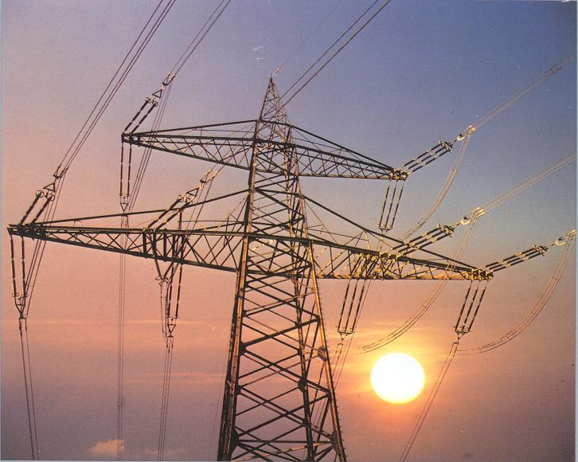

| Energia elettrica | In fisica, l'energia potenziale elettrica, anche detta energia potenziale elettrostatica, è l'energia potenziale del campo elettrostatico. Si tratta dell'energia posseduta da una distribuzione di carica elettrica, ed è legata alla forza esercitata dal campo generato dalla distribuzione stessa. Insieme all'energia magnetica, l'energia potenziale elettrica costituisce l'energia del campo elettromagnetico. L'energia potenziale elettrostatica può essere definita come il lavoro svolto per creare una distribuzione di carica partendo da una configurazione iniziale in cui ogni componente della distribuzione non interagisce con gli altri. Ad esempio, per un sistema discreto di cariche essa coincide con il lavoro svolto per portare le singole cariche da una posizione in cui esse hanno potenziale elettrico nullo alla loro disposizione finale. |  | Produzione Energia elettrica | La produzione di energia elettrica rappresenta il 'primo passaggio' nel processo che conduce dalla produzione fino all'utilizzatore finale di energia elettrica. Le altre fasi del processo sono la trasmissione di energia elettrica e la distribuzione di energia elettrica. Tipicamente la produzione avviene per conversione sempre a partire da una fonte primaria di energia attraverso le centrali elettriche e regolata dal dispacciamento (produzione centralizzata) oppure attraverso sistemi di autoproduzione attestati sulla rete elettrica di distribuzione (produzione distribuita). | PAGINE | PAGINA 2 | PAGINA 3 |
|---|